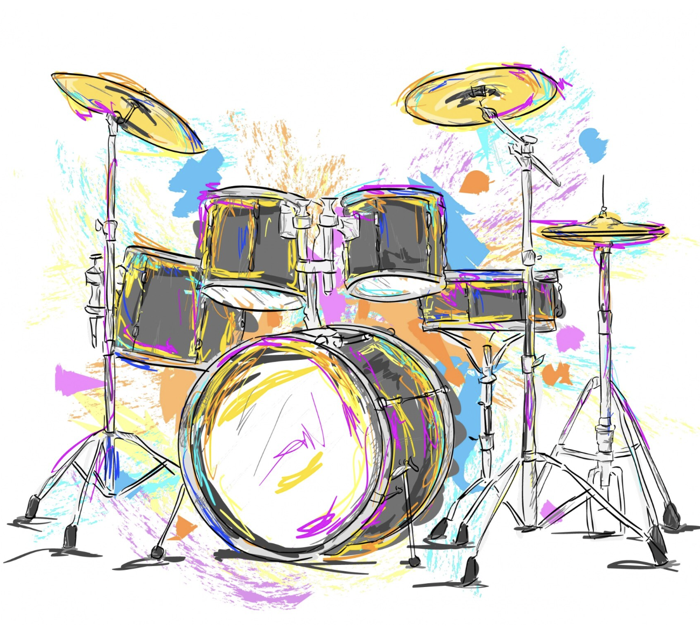

Fun facts de batería
- La batería moderna nació en Estados Unidos: fue creada a principios del siglo XX mezclando instrumentos de diferentes culturas.
- Un baterista puede quemar muchas calorías: tocar batería durante una hora puede quemar entre 400 y 600 calorías.
- Se usan las cuatro extremidades: los bateristas coordinan manos y pies al mismo tiempo.
- El bombo produce los sonidos más graves: es el tambor más grande de la batería y se toca con el pie.
- Existen baterías electrónicas: pueden conectarse a computadores y parlantes.
- Las baquetas pueden ser de distintos materiales: madera, plástico o fibra de carbono.
